I wanted to talk about Münster and Bonn together as they have several similarities as mid-sized German cities (both approximately 320 thousand people) with considerable student populations (Münster ~14%, Bonn ~10%). Although on paper they may seem similar, the on the ground feeling of bicycle friendliness was vastly different giving some great lessons as to what truly makes a bicycle friendly city.
“Münster is some dream fantasy town where someone decided lets amsterdamify a German mid-sized city”
– The opening note from my journal
Münster comes in at number 7 on the Copenhagenize index of the best cycling cities in the world. Stepping out of the main train station you are greeted by bicycles parked everywhere in an ordered chaos, and a large underground bicycle parking station where you can rent these lovely yellow bicycles.
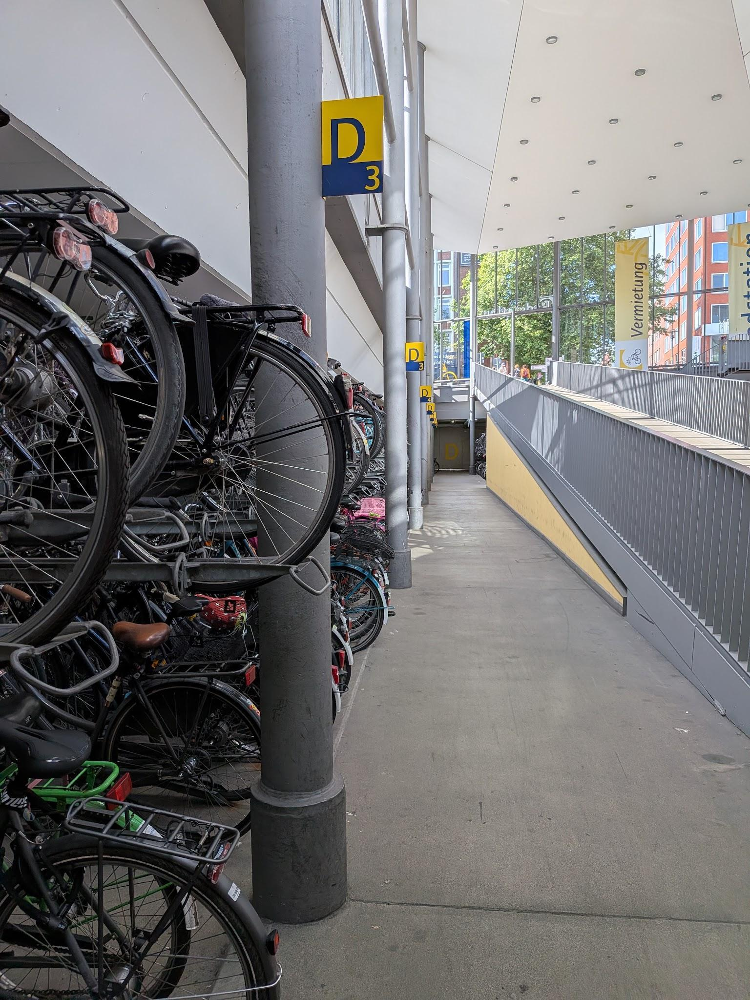
Image 1: Radstation Münster Hbf, bicycle parking and hire facility next to the main train station.
Münster is Germany's proud cycling city. Sitting as the highest in the Copenhagenize index for all German cities, Münster is synonymous with the bicycle. The tourist paraphernalia of postcards, totes and pens featured bicycles proudly. I would even later on in my travels meet someone with a bicycle tattoo, a reminder of a memorable university exchange in Münster.
This brings us to the first of Münster’s key ingredients as a bicycle city, the high student population. Students are poor and have diverse mobility needs, they travel at odd times, outside traditional peaks with 2pm lectures, and 2am nights out. Bicycles are the perfect student transport; they are cheap and provide flexibility in cities that have been designed to accommodate them.
“I heard of a town with thousands of students where the bicycles flow, I had to see it”
– Adrian, a
German
man at my hostel.
The jewel of Münster’s bicycle network is the tree-lined bicycle promenade that encircles the old town. The promenade enables you to do a complete loop of the old town with minimal conflict points and duck in and out of the old town. The promenade provides for both pedestrian and bicycle traffic completely separated from the road network and has the added advantage in providing a green cooling ring around the old town, which was greatly appreciated in the summer heat. Riding around the tree lined avenue is such a calming experience in what is effectively an inner-city forest it’s easy to forget you are in the centre of the city. One thing that struck me is how effective this was in reducing vehicle noise in the city centre and how pleasant it was to ride around a city without the noise of cars.
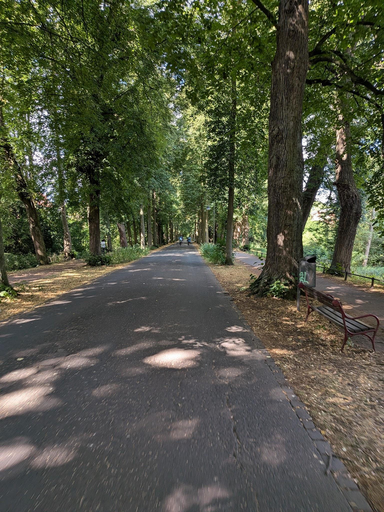
Image 2: The bicycle promenade that encircles Münster's old town.
The promenade, acting as a bicycle ring road, reduces bicycle traffic through the largely pedestrianised old town. Layered permeability is the real key here to why Münster feels so nice to walk, and cycle around. In the centre of the old town pedestrians are given greatest priority, with pedestrianised streets and cobblestone roads that slow traffic. One step out from this is the bicycle promenade. Here the bicycle becomes the new primary form of transport and the speed increases. Cars can still access the old town, however only in specific points, with a combination of pedestrian only streets, one way car streets that are bidirectional for bicycles and intersections where only bicycles can turn right, meaning that cars are restricted from certain areas and slowed in this primarily pedestrian environment. It’s only at the next ring out from the promenade where cars become the dominant form of transport and the speed starts to increase.
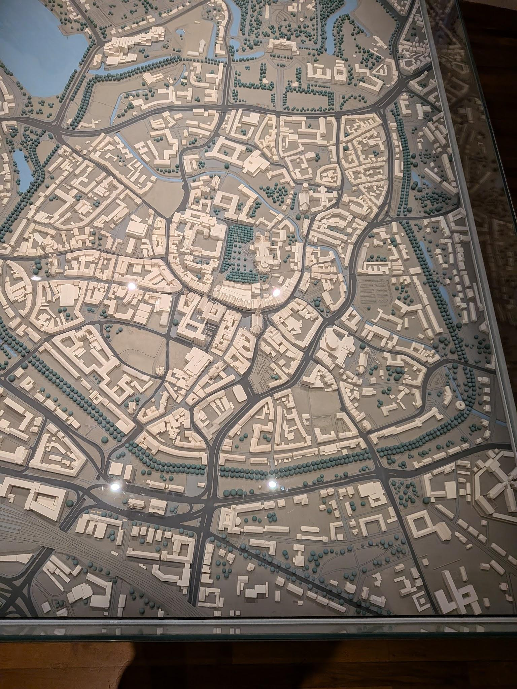
Image 3: Model of Münster from the Museum showing the green ring belt of the bicycle promenade.
This layered segregation of modes of vastly different size, mass and force gives a sense of safety in the primarily pedestrian and cycling areas. If you are a 75kg person walking at 5km/h or cycling at 20 km/h you produce much less force, damage and noise than a 2-tonne car going 50 km/h. It makes sense that these modes of transport should not mix.
The centre of the city is the city's most valuable space that has the highest connection. In the centre the most space efficient transport of people walking must be prioritised otherwise you are devaluing the centre. If you devalue a city centre, through allowing space inefficient transport to dominate such as cars and in particular car parking, you are destroying the value of the place as the place of highest connectivity within your transport network.
Münster has layered permeability in a way where walking in the old town for short trips is prioritised and cycling through the old town is not great in places with the bumpy cobblestones. What I am guessing would suck even more is driving through the old town as there are many restricted streets of pedestrian only or one way only for vehicle traffic. Outside the centre and the promenade, Münster returns to the standard car centric road design with limited road space allocated to cycling infrastructure.
German cities have a habit of painting part of the footpath red/using red bricks to indicate an area for bicycles to ride. This takes space from pedestrians leaving the parking and traffic vehicle lanes untouched. This makes you feel accommodated, but a second-class citizen cycling around on this infrastructure which is often bumpy and can be dangerous by forcing interaction between cyclists and pedestrians.
The FahrradStraβe (Bicycle Street) is a common find in all German cities as well as neighbouring countries such as Belgium, Denmark and the Netherlands. The implementation of bicycle streets varies widely, even within Germany, although they all essentially act as low speed 30 km/h streets prioritising bicycles and restricting car movements. Münster has some fantastic bicycle streets, with bright red pavement, clear signage and good modal filtering that restricts car movements to just residents.
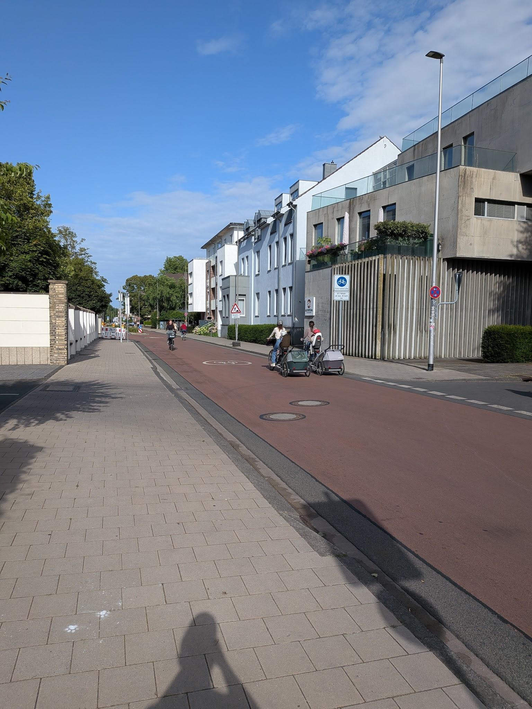
Image 4: An Example of a Fahrradstraβe in Münster.
The advantage of these streets is they are very easy to implement. Modal filters can be set up with a few pot plants or bollards, changing the speed limit is easy and painting the road is also relatively cheap and easy. In a lot of ways this step in creating a network is more important in a psychological sense of easing cycling as a mode of transport into a city, rather than going straight to expensive separated infrastructure. It is important to remember that separated cycle lanes are car infrastructure. If cars are restricted or entirely removed from a street then separated and protected bicycle infrastructure is not required.
Implementing bicycle streets combined with proper separated, protected infrastructure on through streets with high vehicle movements, can be rolled out to form a safe network that provides for a fantastic cycling experience as found in Münster.
Bonn comes in not far behind Münster at number 11 on the Copenhagenize index of the world’s most bicycle friendly cities. Walking out from the train station you would not have guessed it. Bonn is a bit of a mess in terms of its urban realm. There are significant urban arterial car sewers that flow around the lovely pedestrianised old town, providing for a stark contrast with Münster’s layered permeability and separation. There is little in the way of urban greenery and good bicycle infrastructure in the core. Near where I stayed protected bicycle infrastructure was non-existent, with only, relatively wide, painted lanes, and shared bus-bike lanes.
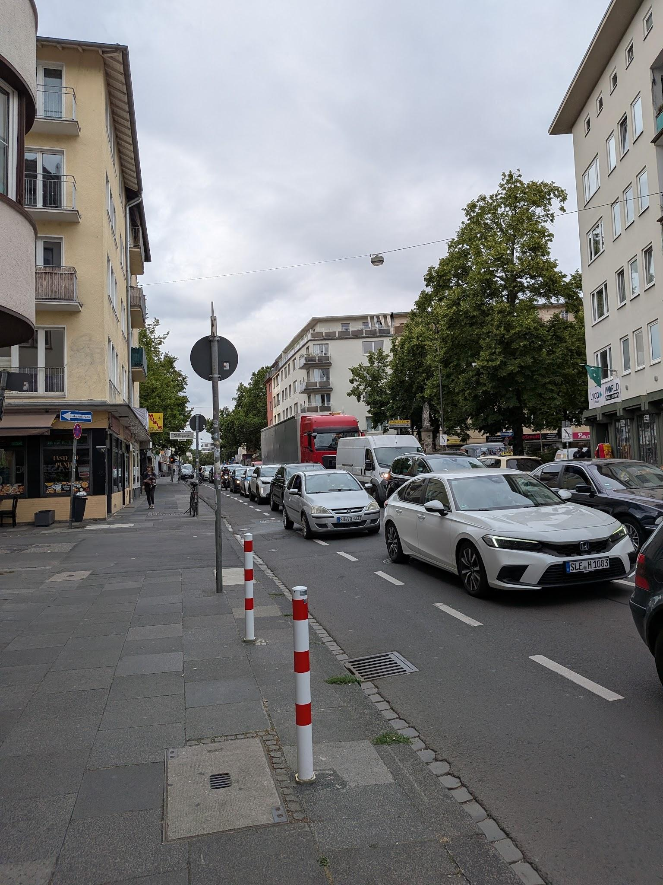
Image 5: A one way car street near where I stayed with no bicycle infrastructure.
This takes me to Bonn’s first cardinal sin of urbanism; its underground tram stops. Street running trams, especially when given their own right of way, break down big boulevards by narrowing and calming the street, and effectively create a pedestrian zone in the middle of the street.
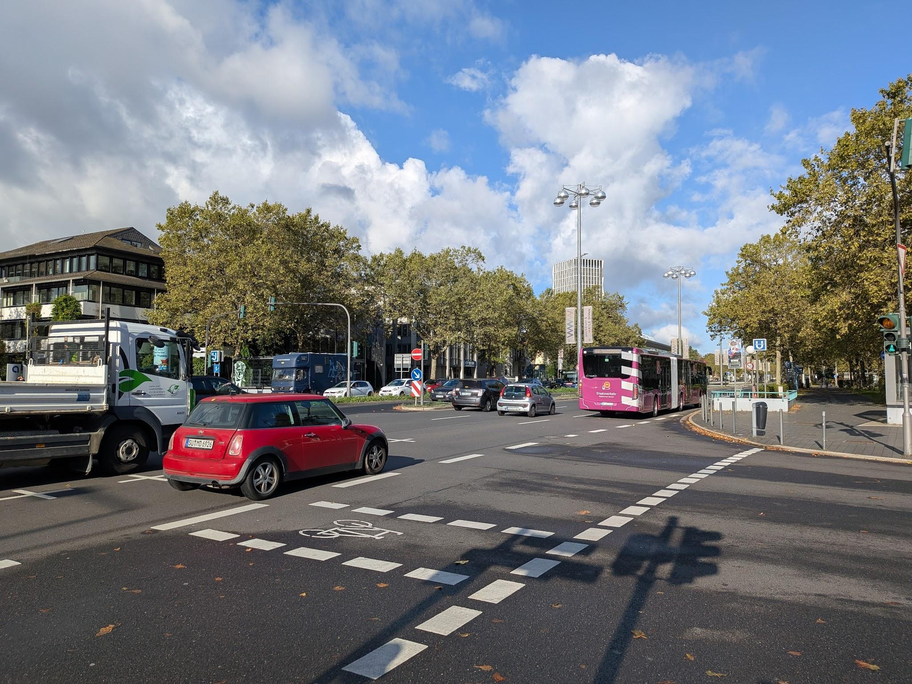
Image 6: The wide arterial in which Bonns Stadtbahn runs underneath.
I spent a good 5 minutes confused trying to find the above tram stop, only to my horror realise it was buried beneath an uncrossable six lane arterial road. Beyond the poor urban outcomes, it also speaks to the psychology of the city of how it prioritises different modes. Burying a transit stop is costly, can have issues with safety and perceived safety with entrances to underground stops and in this case, gives priority above ground road space to car traffic. There is also the problem with visibility of the transit system, I clearly struggled to find it, and it would have been a lot more obvious I was next to a transit system if tracks and overhead wires ran down the street. I will say, this specific transit stop does get bonus points as the underground station is directly connected to the fantastic and free House of the History of the Federal Republic of Germany Museum.
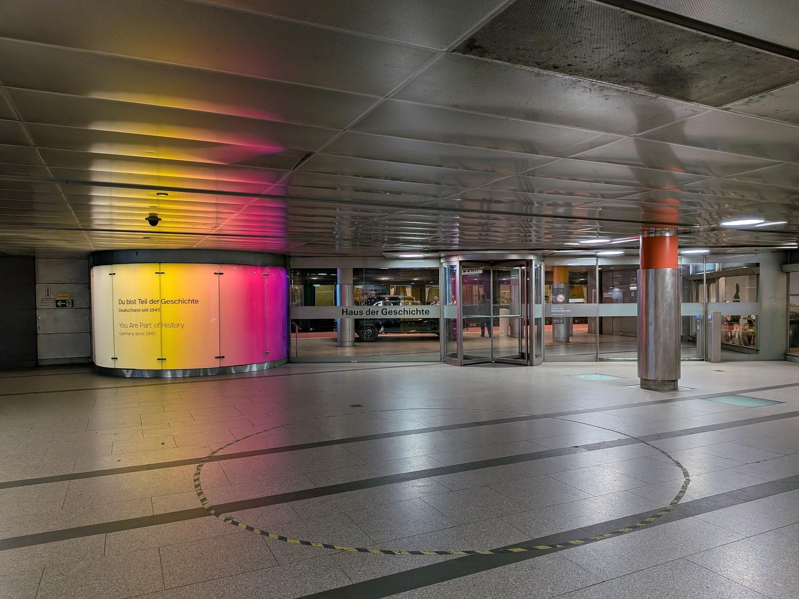
Image 6: The direct entrance from the underground Stadbahn station into the House of the Federal Republic of Germany Museum.
Bonn’s second cardinal sin of urbanism is having transit stops in highways. On an excursion on the StadtBahn out to the nearby castle, I was horrified as the tram diverged into the median of a highway. This itself is not a terrible thing, median space is cheap usually government owned land that transit can utilise. But then we stopped, dead bang in the middle of the highway. To exit the stop, you had to walk up a set of stairs in the middle of a highway to access an overpass. Aside from the obvious unpleasantness of being next to a highway, valuable transit adjacent land is in conflicting land use with that of the highway, negating all the potential transformative effects and improved quality of life that living adjacent to a transit stop can provide.
In defence of Bonn’s transit, buses and trams share stops at certain stops of its above ground sections. This makes a lot of sense in terms of space and cost savings and the integration of transit modes. It is also something Hobart should consider with its implementation of the Northern Suburbs Transit Corridor. Transit does not need to be binary bus or rail, in certain locations, expensive station infrastructure can be designed to accommodate both modes effectively meshing two systems together and facilitating smoother transfers and greater visibility for both transport modes.
After talking to some Bonners, it seems that Bonns transit is in a bit of crisis with 60 of Bonn's fleet of 75 trams having to be removed from service due to safety issues and 20 trams borrowed from Cologne's fleet of trams (City of Bonn 2026a). Additionally, the north bridge, a six lane traffic bridge, has been closed due to structural problems. Because of this bicycle lanes have been removed and extra car lanes added in both directions on adjacent roads in an attempt to ease traffic congestion (City of Bonn 2026b).
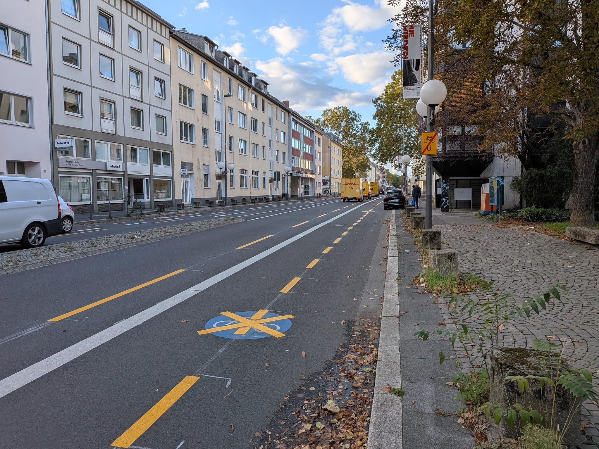
Image 7: Bike lanes removed along the north south arterial Adenauerallee.
It speaks to the hegemony of the car in Bonn as to how the city bends to accommodate cars, and also how easily simple painted bicycle lanes can be removed as cyclists are treated as second class citizens.
There were indications that Bonners don’t feel especially safe cycling around their city. The most glaring of these was the number of high-vis adorned cyclists and the large number of cyclists wearing helmets.
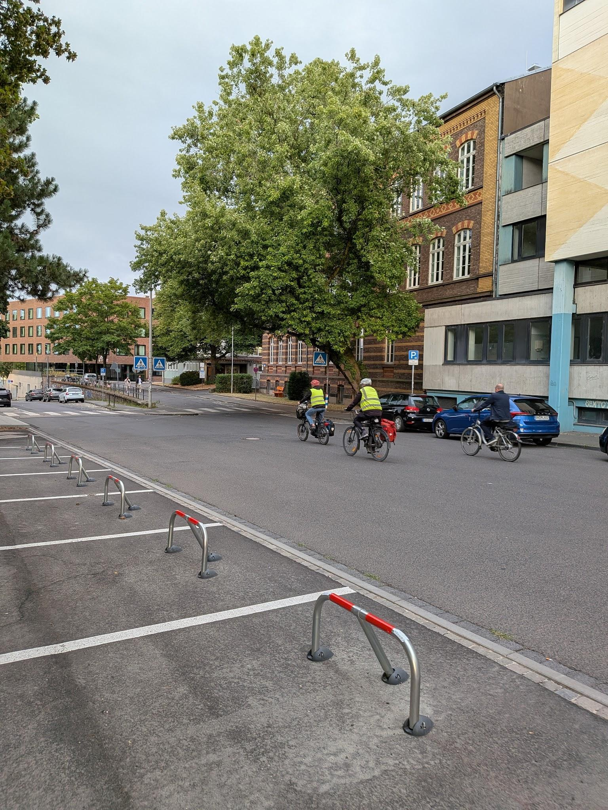
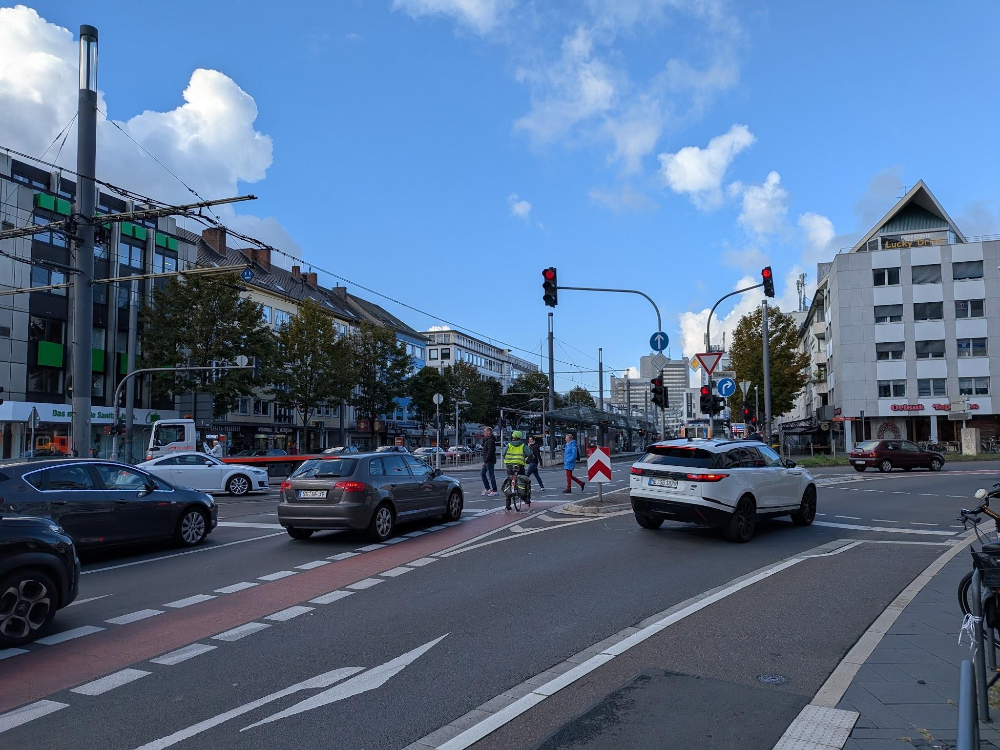
Image 8 and 9: Bonners donning high-vis and helmets to cycle around their city.
This choice of clothing is important as it says, I don’t feel seen or protected on the road and is an indicator of poor or disconnected infrastructure.
Amid all this criticism, it should be noted that Bonn has an impressive bicycle modal share of 21% (Copenhagenize 2024). This is likely boosted by Bonn being a university town, compact in size, with fantastic north-south infrastructure running along the Rhine.
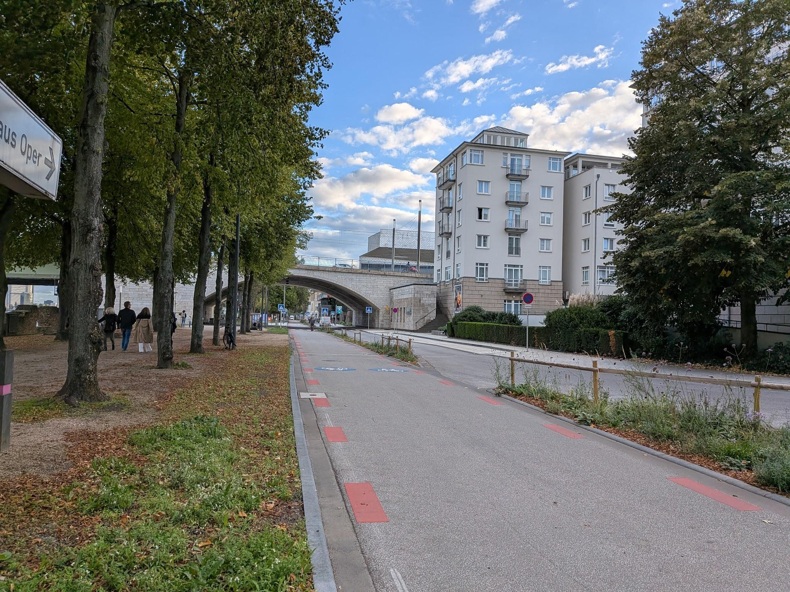
Image 10: Bicycle infrastructure running north south along the Rhine
To give Bonn credit, riding around the outer core area was pleasant, with a mixture of FahradStraβe, one way car streets that were bidirectional for bikes, modal filtering, traffic calming measures and good bike parking. An example of this was the Altstadt area, a lovely mixed-use neighbourhood with slow streets where people piled out on to the street at night.
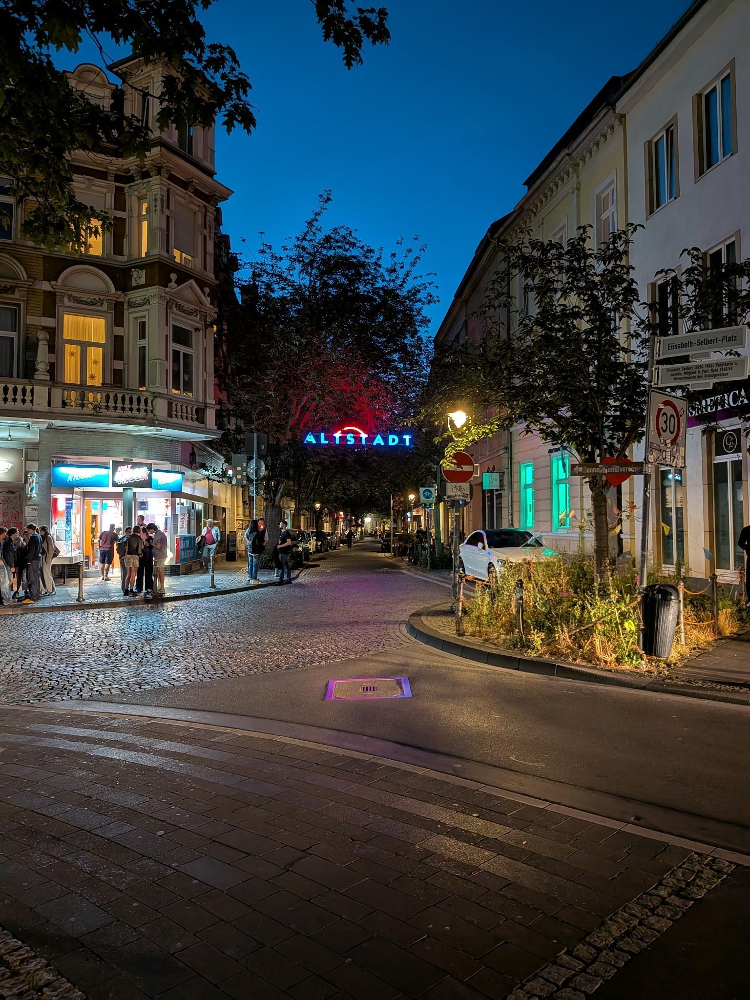
Image 11: Bonn Altstadt at night.
The thing is most German cities I’ve been to do these things, and Bonn does not feel like it’s doing them in an exemplary way. The allocation of road space in German cities, in general, is dominated by cars. This does make sense, Germany is a country defined by its car industry with 32% of passenger cars manufactured in Europe, manufactured in Germany (GTAI, 2025). Restriction of space for and use of cars must be a sensitive political topic for German cities to tackle as its auto industry declines with mounting competition from Chinese manufacturers (Martin, 2026).
After visiting these two cities I am somewhat critical of how the Copenhagenize index ranks bicycle cities, as mid-sized university cities are likely to score highly as cycling rates compete less with transit and private vehicle modal share. Larger cities may have better bicycle infrastructure and networks however due to their size these trips may get combined with transit trips or outweighed by private vehicle and transit modal share. For example, I found Hamburg had better bicycle infrastructure, bicycle streets and modal filtered intersections outside of the inner core city centre than both Bonn and Münster. Additionally, to this Hamburg had one of the best and most extensive bicycles sharing systems I’ve used that I might explore more in a future post, as well as these amazing on-street bicycle shed carousels that were put in back in the 1980s.
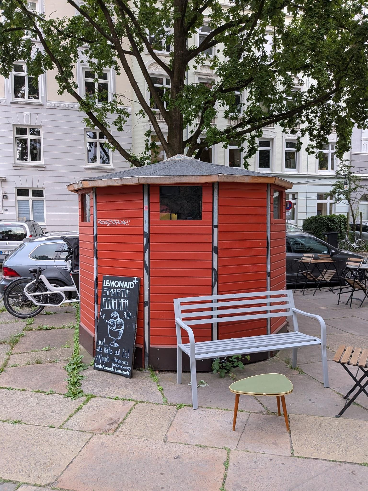
Image 12: Secure street bicycle parking garages in Hamburg, featuring a rotating carousel of twelve bikes stored vertically.
Hamburg is however a large city of 1.7 million people with many more people relying on transit or private vehicles for their trips. What I experienced was one neighbourhood of Hamburg in that sweet spot of distance and density from the centre where the bicycle is the best form of transport and the city had implemented fantastic infrastructure to facilitate it.
After visiting Bonn and Münster as well as Hamburg, I started to reflect more on the important factors that make up a bicycle friendly city. One of the most important factors is density, and the mixed-use nature of neighbourhoods. You must think about the who, what, when, where, and why of trips and the dynamics of the city before even starting to think about planning for bicycle networks. Then when planning bicycle networks from the micro, street and intersection experience level to the overall city network you must think about the context of the city and the importance of integrating bicycle and transit networks to plan transportation for the city holistically. The bicycle has many strengths, filling the gap as a space efficient, fast, point to point, and sustainable transportation method, with cities like Münster, that have embraced the bicycle, thriving because of it
City of Bonn 2026a, Fewer light rail trains in service for the time being, Bundesstadt Bonn, viewed 10 October 2026, https://www.bonn.de/ pressemitteilungen/ juli-2026/kurzfristig-weniger-stadtbahnen-im-einsatz.php?loc=en> .
City of Bonn 2026b, Four-Lane Expansion on Adenauerallee: Road Marking Work Begins September 14, Bundesstadt Bonn, viewed 10 October 2026, https://www.bonn.de/pressemitteilungen/ september-2026/ vierspurigkeit-auf-der-adenauerallee-markierungsarbeiten-ab-14.september.php?loc=en .
Copenhagenize 2024, Bonn, Copenhagenizeindex.eu, viewed 3 October 2026, https:// copenhagenizeindex.eu/ index.php/project/bonn/>.
GTAI 2025, The automotive industry in Germany, viewed 3 October 2026, https://www.gtai.de/ resource/blob/64100/ ebdfca790aa0df33b694bfc4e653f998/ 20250520_IO_Automotive_WEB.pdf.
Martin, N 2026, BMW to Volkswagen: How deep is Germany’s auto industry cull?, dw.com, Deutsche Welle, viewed 10 October 2026, https: //www.dw.com/en/germany-car-industry-job-cuts-bmw-volkswagen-mercedes-audi-porsche-china-ev-graphics/a-78168695> .